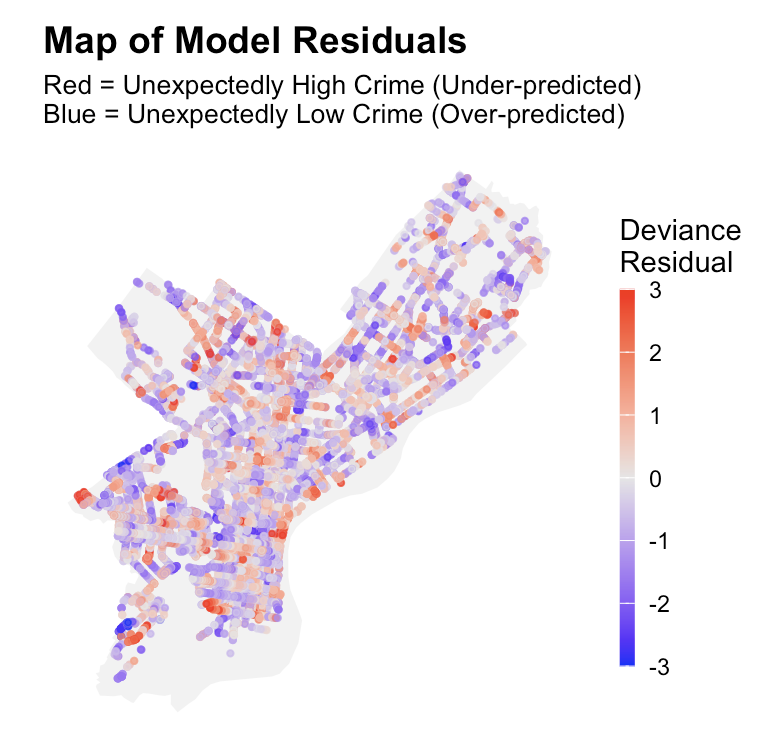
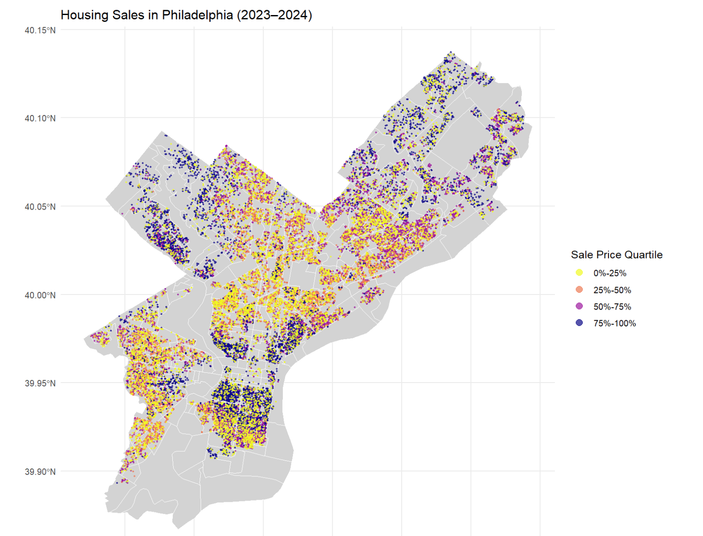
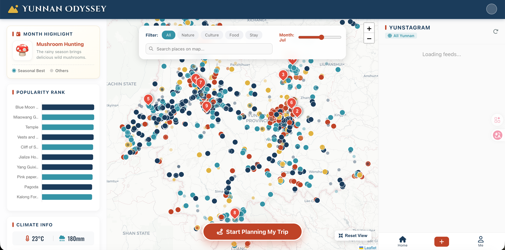

I use spatial data to understand how cities work — from how people move, to how neighborhoods are valued, to how we build more equitable urban environments.
Hello — I'm Christine, an urban planner and spatial analyst who believes the best city interventions start with rigorous, honest data. I'm a graduate student in Urban Spatial Analytics at the University of PennsylvaniaGPA 4.0, working at the intersection of machine learning, GIS, and urban policy.
My work spans road safety prediction in Philadelphia, housing tax equity modeling, benchmarking generative AI for satellite imagery, and building cloud-based tools that help planners see what they couldn't see before. I approach every project with equal attention to technical precision and human impact.
Before Penn, I studied Urban and Rural Planning at Tianjin University and spent a semester at The University of Hong Kong. I've interned at two of China's leading planning institutes — Shenzhen Urban Planning & Design Institute and Shanghai Tongji Urban Planning & Design Institute.
Actively seeking full-time roles in urban data analytics and planning technology — available from May 2026.
Hover to preview · Click to explore each project.



Whether you're hiring, researching, or want to talk cities and data — I'd love to hear from you.